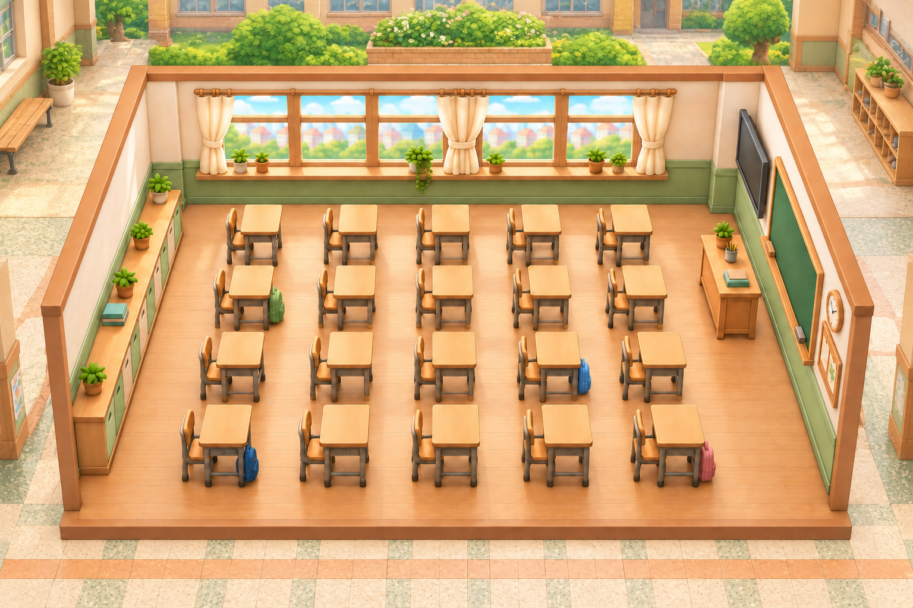
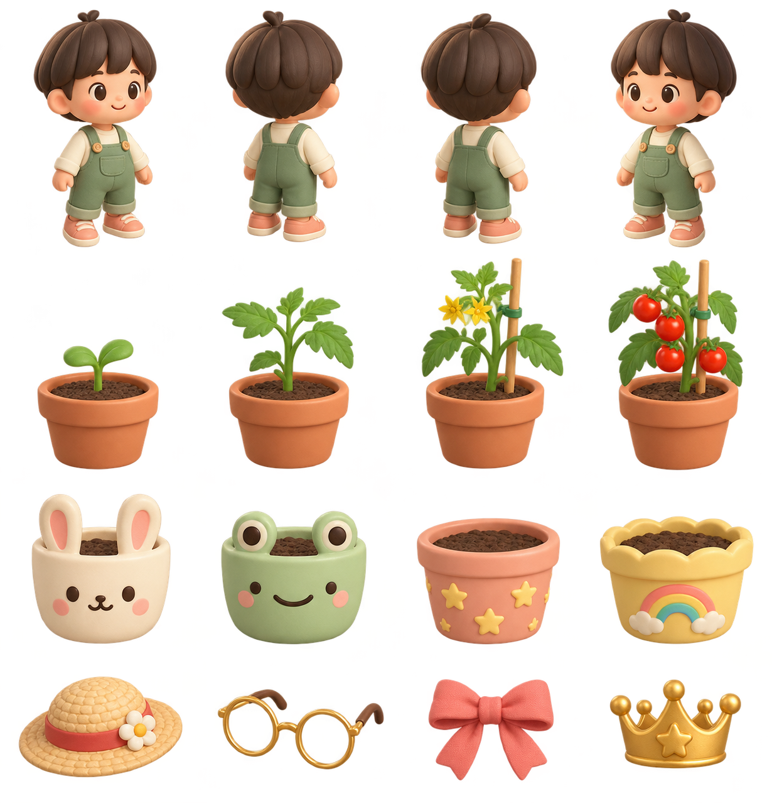
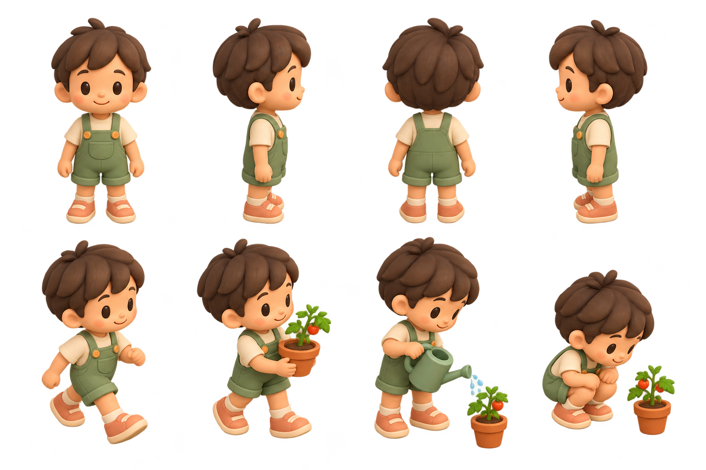
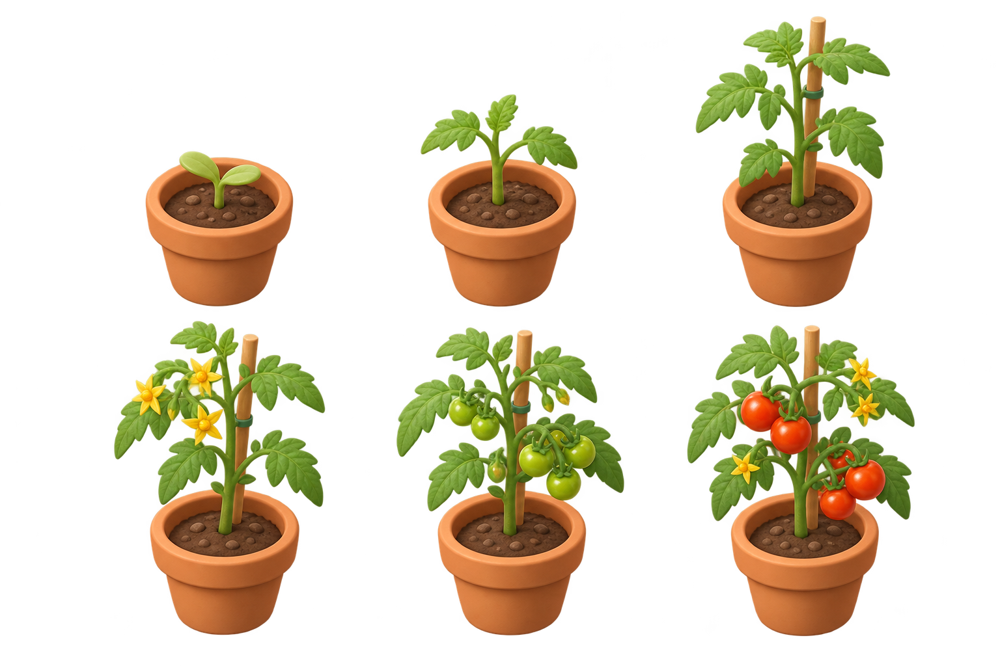
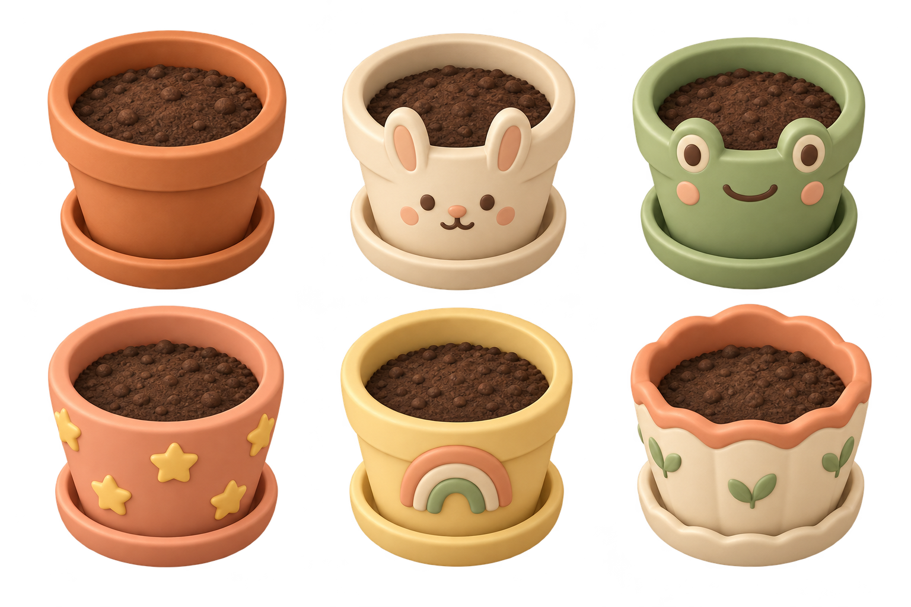
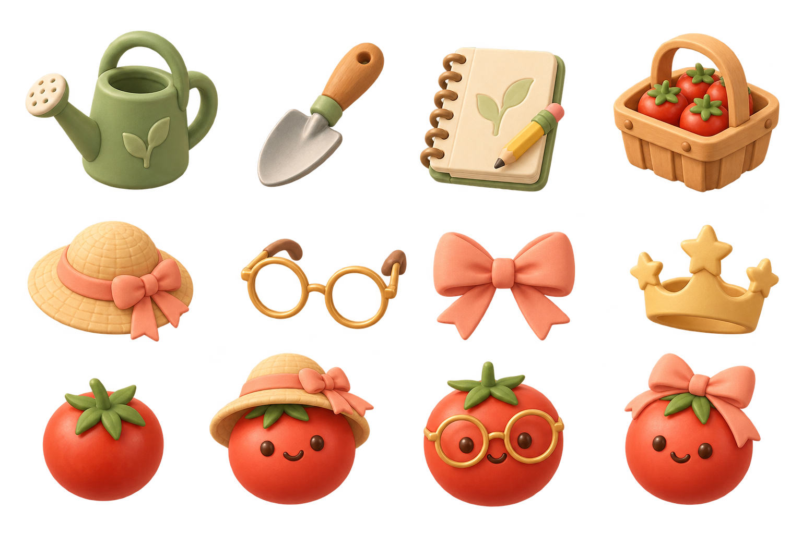
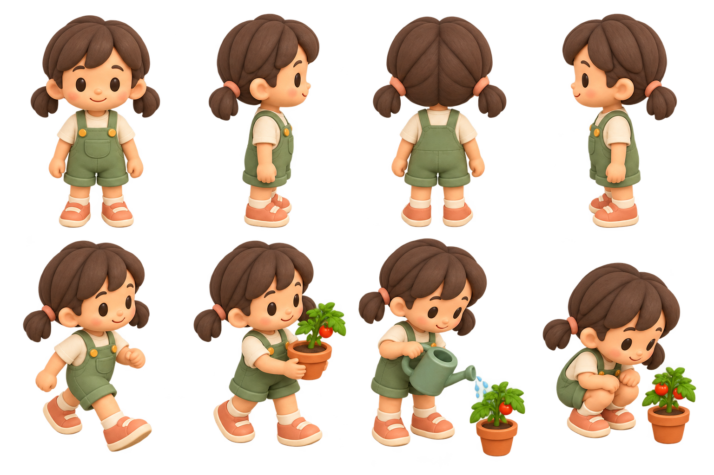

CLASSROOM TOMATO GARDEN / ASSET COLLECTION 01우리 반 토마토 정원
햇살 가득한 교실에서, 나만의 작은 토마토를 키워요.
둥근 점토 질감의 2.5D 교실 · 학생 캐릭터 · 성장 단계 · 꾸미기 보상

햇살이 머무는 우리 교실
오른쪽 벽 쪽의 높은 시점에서 교실 전체를 바라보는 시안. 책상 20개와 창가, 칠판, 사물함, 바닥 경계가 모두 보이도록 구도를 조정했습니다.

돌보고, 관찰하고, 꾸미는 즐거움
학생 방향 시안 4개 · 새싹부터 수확까지 4단계 · 토끼/개구리/별/무지개 화분 · 모자/안경/리본/왕관
디자인 원본 미리보기입니다. 게임 이동·보상 기능 및 걷기 애니메이션은 이번 에셋 제작에 포함되지 않습니다. 에셋 설명 및 생성 프롬프트
같은 교실에서 자라는 친구들
확정된 교실 스타일에 맞춘 새 에셋 모음

학생 캐릭터 · 방향 4종과 행동 자세 4종

새싹부터 빨간 열매까지 · 성장 6단계

나만의 화분 · 기본, 토끼, 개구리, 별, 무지개, 새싹

돌봄 도구와 꾸미기 보상 · 12종
제작 정보와 생성 프롬프트

여학생 캐릭터 · 방향 4종과 걷기·화분 들기·물주기·관찰 자세